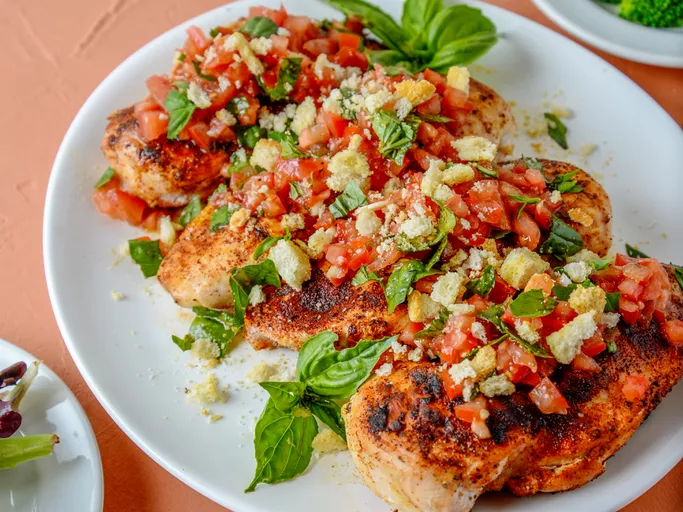

Grilled Bruschetta Chicken

Description
Grilled bruschetta chicken is a delicious marriage of bruschetta and grilled chicken breasts. It makes an easy, lively main dish. Use fresh garden tomatoes or Roma tomatoes and as much garlic and basil as you dare! We love this with fresh steamed broccoli or a tossed green salad.
This grilled bruschetta chicken, topped with fresh seasonal produce, screams “summertime.” Featuring tomatoes, garlic, and basil, the colorful grilled chicken recipe is practically bursting with bold Italian flavor. Crumbled croutons add welcome crunch, ensuring every bite is simply irresistible.
Ingredients
- 2 tomatoes, cored
- 1 clove garlic, minced
- 1/4 cup extra virgin olive oil
- 1/2 teaspoon freshly ground black pepper, divided, or to taste
- 1 teaspoon salt, divided, or to taste
- 1/2 cup purchased croutons
- 2 tablespoons torn fresh basil leaves, plus more leaves for garnish
- 4 boneless, skinless chicken breast halves
- 1/2 teaspoon garlic powder
- 1/2 teaspoon sweet paprika
- 1 tablespoon olive oil, or as needed, for oiling the grill
Directions
- Gather the ingredients. Preheat an outdoor grill for medium heat.
- Meanwhile, make the bruschetta. Over a bowl, chop tomatoes to capture all the juice. Add olive oil, garlic, 1/2 teaspoon salt, and 1/4 teaspoon black pepper. Stir in torn basil leaves; season with additional salt and pepper to taste, if needed. Set bruschetta aside.
- Place croutons in a resealable plastic bag and seal the bag. Tap each crouton with a heavy spoon to break into smaller pieces, without crushing; set aside.
- Place chicken breasts on a plate and pat dry with paper towels. Sprinkle remaining salt and pepper, garlic powder, and sweet paprika on both sides of the chicken. If pieces are very thick, pound to about 1/2-inch thickness.
- When the grill is preheated, clean the grates, and using tongs, carefully oil the grates with a paper towel saturated with olive oil.
- Place seasoned chicken breasts on the oiled grates and grill until juices run clear and chicken is no longer pink at the center, 4 to 5 minutes per side, depending on thickness. A meat thermometer should read 165 degrees F (74 degrees C) when inserted into the thickest part of the chicken.
- Top each grilled chicken breast with bruschetta and sprinkle on crumbled croutons. Garnish with additional fresh basil.